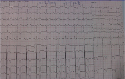
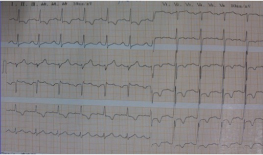

上传时间：2013-12-08
活动时胸闷，休息后几分钟可缓解，既往高血压病史10年，稳定性劳累性心绞痛，因活动时胸闷加重入院，予以ARB/利尿剂复代文联合降压，复查胸闷症状减轻，血压稳定。β受体阻滞剂是冠状动脉粥样硬化性心脏病治疗的基石。
患者，男，52岁，因“活动时胸闷4年，加重1月”入院。
*现病史：患者近1月感活动时胸闷，休息后几分钟可缓解，无胸痛，无肩背部放射痛，静息及夜间无发作。
*既往史：既往有高血压病史10年。
*查体：BP180/110mmHg，HR96次/分，双肺呼吸音清,未闻及干湿啰音，心律齐，心音亢进，各瓣膜听诊区未闻及病理性杂音，肝脾肋下未及，双下肢无水肿。
*辅助检查：
入院心电图
1、冠心病
稳定性劳累性心绞痛
心功能Ⅱ级
2、原发性高血压3级（极高危）
高血压性心脏病
药物治疗：ARB/利尿剂+美托洛尔缓释片+CCB联合降压、他汀类药物等
因心率控制不佳，未能行心脏CTA，病人拒绝行冠脉介入治疗
*药物调整情况
复查心电图
β受体阻滞剂抑制交感过度激活，在整个心血管疾病链中扮演了不可或缺的角色。其抗缺血的地位无可争议是冠状动脉粥样硬化性心脏病治疗的基石。
各指南均强调稳定型患者若无禁忌症均应将静息心率维持在55-60bpm，严重心绞痛患者可降至﹤50bpm。
在治疗过程中应充分强调每位患者心率达标剂量即是该患者的BB最佳剂量，而不强调“目标剂量”。
恭喜您已投票成功，感谢您的参与